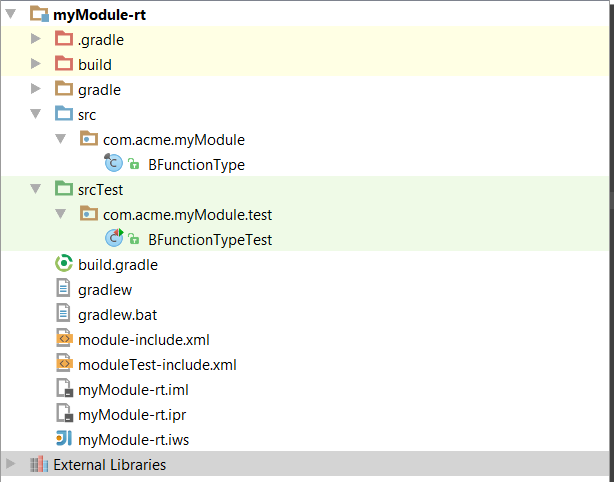
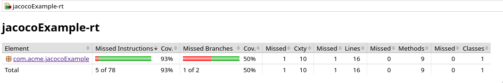

The Niagara Framework uses the TestNG test framework for executing unit tests within the Niagara Framework. TestNG is a well-known tool in the Java community, and in addition to creating basic unit tests, it supports the following functionality:
Niagara’s gradle-based build system supports co-located test source code (that is, source code and test code are contained in the same module development folder). More information on TestNG can be found in the TestNG Documentation
Create a “srcTest” folder in the module, and add all your test source code there. Here is an example of a module with a test class:

Each test class should extend javax.baja.test.BTestNg and should include the standard Baja code to declare the Type. TestNg will treat each test method as a single test case. A test method is defined by annotating it with the @Test annotation:
package com.acme.myModule.test;
import javax.baja.nre.annotations.NiagaraType;
import javax.baja.sys.Sys;
import javax.baja.sys.Type;
import javax.baja.test.BTestNg;
import com.acme.myModule.BFunctionType;
import org.testng.Assert;
import org.testng.annotations.Test;
@NiagaraType
public class BFunctionTypeTest extends BTestNg
{
/*+ ------------ BEGIN BAJA AUTO GENERATED CODE ------------ +*/
/*@ $com.acme.myModule.test.BFunctionTypeTest(2979906276)1.0$ @*/
/* Generated Mon Mar 28 07:19:53 EDT 2016 by Slot-o-Matic (c) Tridium, Inc. 2012 */
////////////////////////////////////////////////////////////////
// Type
////////////////////////////////////////////////////////////////
@Override
public Type getType() { return TYPE; }
public static final Type TYPE = Sys.loadType(BFunctionTypeTest.class);
/*+ ------------ END BAJA AUTO GENERATED CODE -------------- +*/
@Test
public void addTest()
{
Assert.assertEquals(BFunctionType.make(BFunctionType.ADD), BFunctionType.add);
}
}
There are several assert*() methods available in TestNG to test equality, null, true/false, etc. See the TestNG Javadocs for the complete list.
There should be no changes necessary to the default build.gradle/<moduleName>.gradle scripts to compile unit test cases. If the unit tests require non-Java resources (BOG files, images, input files, etc), gradle will need to be configured to include them in the resulting test jar. For example, if there is an “rc” folder in the “srcTest” folder with the necessary test resources:
tasks.named<Jar>("moduleTestJar") {
from("srcTest") {
include("rc/**")
}
}
Types for unit tests must be declared, but this should be generated automatically when tests are compiled (see below)
There is a “moduleTestJar” gradle task which will build a test module containing all the unit tests for a given module:
gradlew moduleTestJar
Once the module test jar has been generated, the test command is used to run the tests defined for a given module. The test command can take one of three arguments:
Single-method execution is not currently supported. Test output will look something like this:
C:\Users\user\Niagara4.2\tridium\myModule\myModule-rt> test myModule
[TestNG] Running:
Command line suite
===============================================
myModuleTest_FunctionTypeTest
Total tests run: 5, Failures: 0, Skips: 0
===============================================
Output verbosity can be set using the option v:<n>, where n is an integer from 1 to 10. The higher the number, the more output provided by TestNG.
One big advantage of TestNG is its flexible test configuration options. As with specifying tests, these configurations are also specified with annotations. Setup and teardown methods can be established to run once per method, per class, per test group, or per test suite. The example below shows how to initialize and destroy a test station once for all test methods in a class, calling methods from BTest.
private TestStationHandler handler;
private BStation station;
@BeforeClass(alwaysRun=true)
public void setup()
throws Exception
{
handler = BTest.createTestStation();
handler.startStation();
station = handler.getStation();
}
@AfterClass(alwaysRun=true)
public void cleanup()
throws Exception
{
handler.stopStation();
handler.releaseStation();
handler = null;
}
A set of tests may be grouped together with the groups annotation attribute. Groups naming is currently up to the developer. One use of groups is to identify a collection of tests to execute in a Continuous Integration (CI) environment. Note that CI is not provided by Niagara; see this link for more information.
An example of the group attribute is below:
@Test(groups={"ci"})
public void ngTestSimple()
{
Assert.assertEquals(Lexicon.make("test").getText("fee.text"), "Fee");
}
You may declare dependencies between test methods and groups using dependsOn* annotation attributes. For example, if you have a group of tests that should run after other sets, just attach the dependsOnGroups attribute for each method in the group.
If you want to explicitly define a sequence of test method execution, use the priority annotation attribute. The value is a positive integer, and lower priorities will be scheduled first. See the TestNG documentation for additional information.
Important: If you implement groups and also use BeforeClass/AfterClass methods, be sure to attach the alwaysRun=true attribute to the BeforeClass/AfterClass annotations
A set of similar test cases can be parameterized with a data source class that generates input to the test method. Again, the relationship is designated with parameterized annotations. First, you declare a data provider that creates an object array containing test method arguments for for each instance of the test execution. In the example below, the test method takes two arguments, and each entry in the data provider array contains instances of those two argument types.
@DataProvider(name="operation")
public Object[][] createColumnData()
{
return new Object[][] {
{ Integer.valueOf(BFunctionType.ADD), BFunctionType.add },
{ Integer.valueOf(BFunctionType.SUBTRACT), BFunctionType.subtract },
{ Integer.valueOf(BFunctionType.MULTIPLY), BFunctionType.multiply },
{ Integer.valueOf(BFunctionType.DIVIDE), BFunctionType.divide }
};
}
@Test(dataProvider = "operation")
public void testOperation(Integer i, BFunctionType ft)
{
Assert.assertEquals(BFunctionType.make(i.intValue()), ft);
}
Note that data provider argument types must be Java Objects (they cannot be primitives such as boolean on int).
If your code can generate exceptions and you want to test those execution paths, you can tell a test method to expect particular exception types by using the expectedExceptions attribute with a list of exception classes. In the following test, an occurrence of a NullPointerException will successfully pass the test. Any other exception type will fail the test.
@Test(expectedExceptions={java.lang.NullPointerException.class})
public void ngTestException()
throws Exception
{
a = BExportSourceInfo.make(BOrd.make("station:|slot:/a"), BOrd.make("station:|slot:/b"), new BGridToText());
BExportSourceInfo.make("foo:bar");
a.decodeFromString("foo:bar");
}
TestNG will generate XML and HTML reports each time it runs. By default, it creates these in a <niagara.user.home>/reports/testng folder. The HTML report index.html contains detailed information about the test results. There is also a static XML report and an email-able static HTML report. The report location can be changed using the command line option -output:<path>
The Niagara test executable offers several options for tailoring the execution of tests to your needs. The usage and options are outlined below:
usage:
test <target> [target ... target] [testng options]
target:
all
<module>
<module-runtimeProfile>
<module>:<type>
<module>:<type>.<method>
<com.package>.<BTestClass>
<com.package>.<BTestClass>.<method>
/<regex to match against the com.package.BTestClass#method format>/
testng options:
-v:<n> Set TestNG output verbosity level (1 - 10)
-output:<path> Set the location for TestNG output
-groups:<a,b,c> Comma-separated list of TestNG group names to test
-excludegroups:<a,b,c> Comma-separated list of TestNG group names to skip
-skipHtmlReport Flag to disable HTML report generation
-generateJunitReport Flag to enable JUnit XML report generation
-benchmark Print the 50 highest duration tests and test suites on exit
-loopCount:<n> Run target(s) in a loop n times (1 - 1000000)
In addition to running your tests with the test command; you can also run them via Gradle. Running your tests with Grade enables the use of the JaCoCo code coverage tool. JaCoCo gives you a report of how much of your code was actually exercised by your tests. While this is not in and of itself an indicator of test quality, it can be a useful tool to see areas of your code that your tests do not cover sufficiently.
To run your module’s tests with coverage, run the tests via Gradle:
gradlew :jacocoExample-rt:niagaraTest
This will produce a JaCoCo test coverage data file at jacocoExample-rt/build/jacoco/niagaraTest.exec. This file in and of itself doesn’t do much; you’ll want to generate an HTML report as well. This can be done with the following Gradle command:
gradlew :jacocoExample-rt:jacocoNiagaraTestReport
This will produce an HTML report in jacocoExample-rt/build/reports/jacoco/niagaraTest/html. You can open this report in any web browser to get a view of the test coverage for your module:
